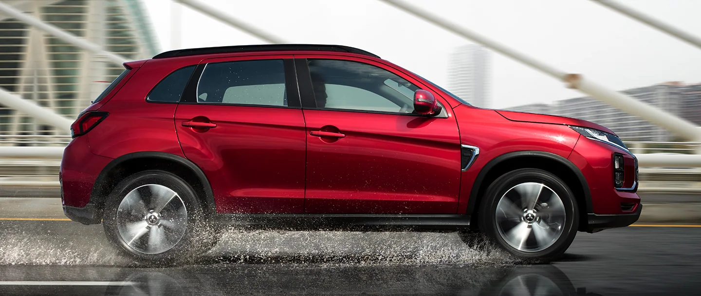
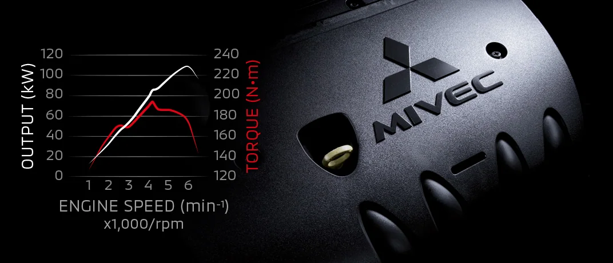
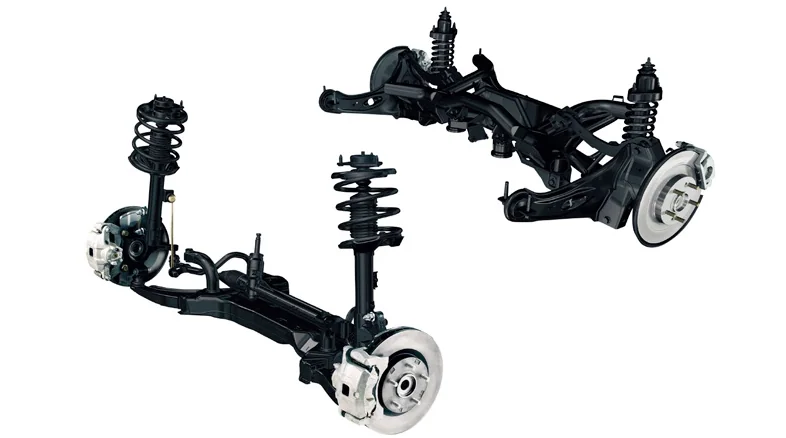
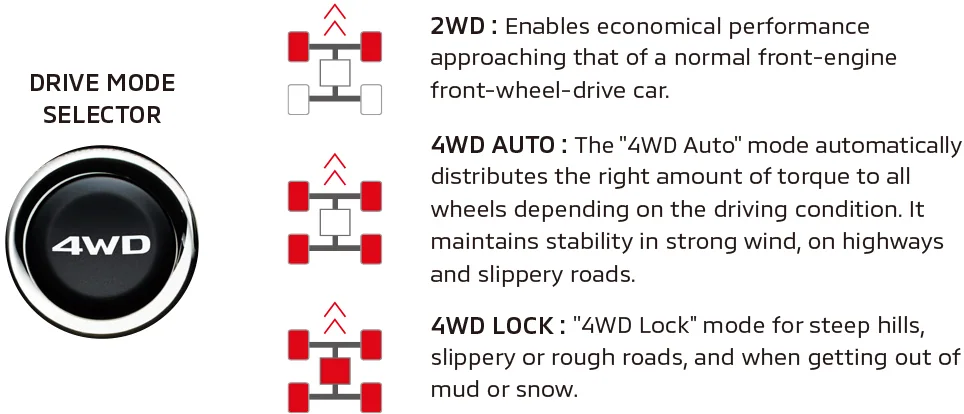
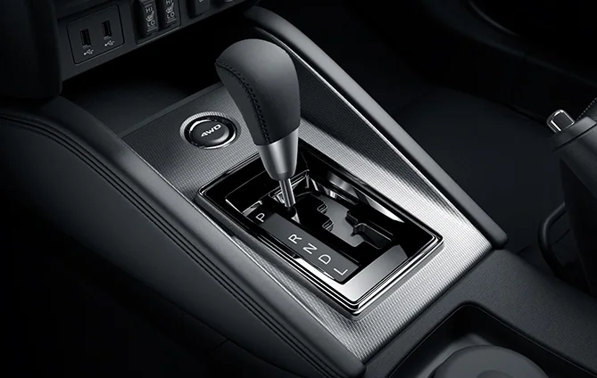
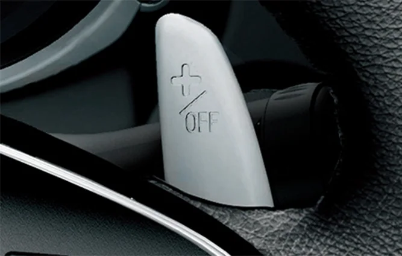
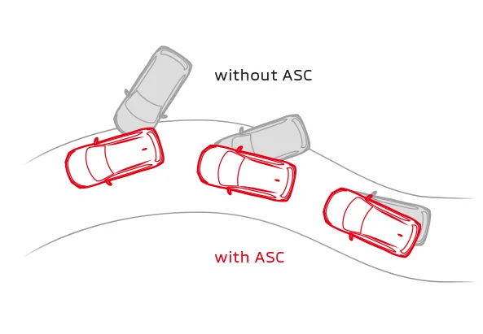

ДИНАМИКА
ДВИГАТЕЛЬ 2,0 Л MIVEC*
Двигатель объёмом 2,0 л обеспечивает уверенную тягу в поездках. Технология MIVEC сочетает мощность, экономичность и экологические характеристики.
* Электронная система управления фазами газораспределения Mitsubishi.
197N·m / 4,200rpm
110kW / 6,000rpm

ПОДВЕСКА
Передняя подвеска MacPherson и задняя многорычажная подвеска обеспечивают плавность на неровной дороге. Настройки амортизаторов и стабилизаторов сочетают точность управления и комфорт.
Точные настройки амортизаторов и стабилизаторов сочетают отзывчивое управление и комфорт.

ПОЛНЫЙ ПРИВОД С ЭЛЕКТРОННЫМ УПРАВЛЕНИЕМ И ВЫБОРОМ РЕЖИМА
Выбирайте один из трёх режимов движения в зависимости от дорожных условий и стиля вождения.

INVECS-III CVT
Двигатель объёмом 2,0 л обеспечивает уверенную тягу в поездках. Технология MIVEC сочетает мощность, экономичность и экологические характеристики.

ПОДРУЛЕВЫЕ ПЕРЕКЛЮЧАТЕЛИ
Подрулевые переключатели позволяют менять передачи, не снимая рук с руля.
Примечание: подрулевые переключатели доступны только в версиях с CVT.

КУРСОВАЯ УСТОЙЧИВОСТЬ ASC И ПРОТИВОБУКСОВОЧНАЯ СИСТЕМА TCL
Датчики системы ASC отслеживают движение автомобиля и боковое скольжение. Управляя тягой двигателя и тормозными усилиями на отдельных колёсах, система помогает сохранять устойчивость.

ИНДИКАТОР ПЕРЕКЛЮЧЕНИЯ ПЕРЕДАЧ
Индикатор на многофункциональном дисплее рекомендует подходящий момент переключения передачи.